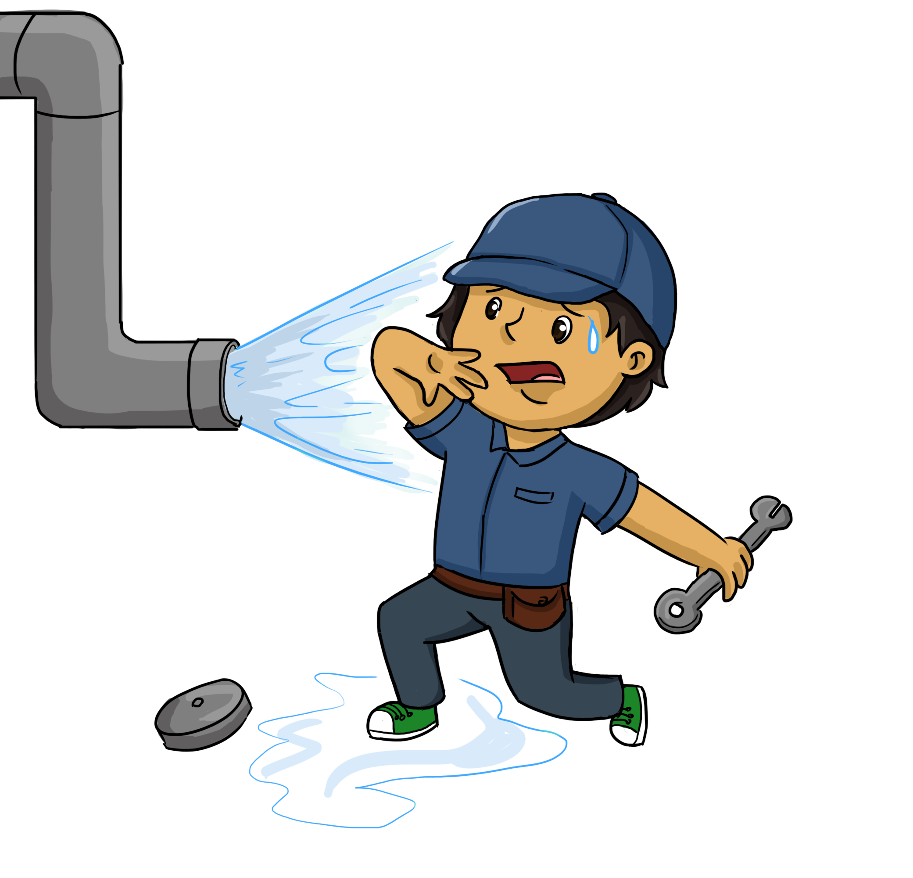

The plumber response object is stored as an environment, much like the request object. The response object, which is accessible as res from within plumber functions, contains the following objects:
| Name | Example | Description |
|---|---|---|
headers |
list(header = "abc") |
A list of HTTP headers to include in the response |
body |
NULL |
This is set to the serialized output of the handler unless the response object is directly returned from the handler (see bypassing serialization) |
status |
200 |
The HTTP status code included in the response |
The response object also contains the following methods that can be invoked:
| Name | Example | Description |
|---|---|---|
setCookie |
res$setCookie("foo", "bar") |
Sets an HTTP cookie on the client |
removeCookie |
res$removeCookie("foo") |
Removes an HTTP cookie |
setHeader |
res$setHeader("foo", "bar") |
Sets an HTTP header |
toResponse |
res$toResponse() |
Renders the response object as a list containing status, headers, and body. |
The other methods (clone, initialize, and serializer) should not be directly invoked on the response object.
In order to send a response from R to an API client, the object must be “serialized” into some format that the client can understand. JavaScript Object Notation (JSON) is one standard which is commonly used by web APIs. JSON serialization translates R objects like list(a=123, b="hi!") to JSON text resembling {a: 123, b: "hi!"}.
JSON is not appropriate for every situation, however. If you want your API to render an HTML page that might be viewed in a browser, for instance, you will need a different serializer. Likewise, if you want to return an image rendered in R, you likely want to use a standard image format like PNG or JPEG rather than JSON.
By default, Plumber serializes objects into JSON via the jsonlite R package. However, there are a variety of other serializers that are built in to the package.
You can also pass arguments to certain serializers to modify their behavior like in the example below.
#* @serializer json list(na="string")See the Serialization article for details.
| Annotation | Content Type | Description/References |
|---|---|---|
@serializer contentType |
(user supplied) | Send response with a particular Content-Type header |
@serializer html |
text/html; charset=UTF-8 |
Passes response through without any additional serialization |
@serializer json |
application/json |
Object processed with jsonlite::toJSON()
|
@serializer unboxedJSON |
application/json |
Object processed with jsonlite::toJSON(auto_unbox=TRUE)
|
@serializer rds |
application/rds |
Object processed with base::serialize()
|
@serializer csv |
text/csv |
Object processed with readr::format_csv()
|
@serializer tsv |
text/tab-separated-values |
Object processed with readr::format_tsv()
|
@serializer feather |
application/feather |
Object processed with feather::write_feather()
|
@serializer yaml |
text/x-yaml |
Object processed with yaml::as_yaml()
|
@serializer htmlwidget |
text/html; charset=utf-8 |
htmlwidgets::saveWidget() |
@serializer text |
text/plain |
Text output processed by as.character()
|
@serializer format |
text/plain |
Text output processed by format()
|
@serializer print |
text/plain |
Text output captured from print()
|
@serializer cat |
text/plain |
Text output captured from cat()
|
@serializer jpeg |
image/jpeg |
Images created with jpeg()
|
@serializer png |
image/png |
Images created with png()
|
@serializer svg |
image/svg |
Images created with svg()
|
@serializer bmp |
image/bmp |
Images created with bmp()
|
@serializer tiff |
image/tiff |
Images created with tiff()
|
@serializer pdf |
application/pdf |
PDF File created with pdf()
|
You may have noticed that API responses generated from Plumber render singular values (or “scalars”) as arrays. For instance:
#> {"a":[5]}The value of the a element, though it’s singular, is still rendered as an array. This may surprise you initially, but this is done to keep the output consistent. While JSON differentiates scalar from vector objects, R does not. This creates ambiguity when serializing an R object to JSON since it is unclear whether a particular element should be rendered as an atomic value or a JSON array.
Consider the following API which returns all the letters lexicographically “higher” than the given letter.
#* Get letters after a given letter
#* @get /boxed
function(letter="A"){
LETTERS[LETTERS > letter]
}
#* Get letters after a given letter
#* @serializer unboxedJSON
#* @get /unboxed
function(letter="A"){
LETTERS[LETTERS > letter]
}This is an example of an API that, in some instance, produces a scalar, and in other instances produces a vector.
Visiting http://localhost:8000/boxed?letter=U or http://localhost:8000/unboxed?letter=U will return identical responses:
However, http://localhost:8000/boxed?letter=Y will produce:
while http://localhost:8000/unboxed?letter=Y will produce:
"Z"The /boxed endpoint, as the name implies, produces “boxed” JSON output in which length-1 vectors are still rendered as an array. Conversely, the /unboxed endpoint sets auto_unbox=TRUE in its call to jsonlite::toJSON, causing length-1 R vectors to be rendered as JSON scalars.
While R doesn’t distinguish between scalars and vectors, API clients may respond very differently when encountering a JSON array versus an atomic value. You may find that your API clients will not respond gracefully when an object that they expected to be a vector becomes a scalar in one call.
For this reason, Plumber inherits the jsonlite::toJSON default of setting auto_unbox=FALSE which will result in all length-1 vectors still being rendered as JSON arrays. You can configure an endpoint to use the unboxedJSON serializer (as shown above) if you want to alter this behavior for a particular endpoint.
There are a couple of functions to be aware of around this feature set. If using boxed JSON serialization, jsonlite::unbox() can be used to force a length-1 object in R to be presented in JSON as a scalar. If using unboxed JSON serialization, I() will cause a length-1 R object to present as a JSON array.
The @serializer jpeg and @serializer png annotations cause the graphical output of an endpoint to be written to a file then returned to the client using the jpeg() or png() functions, respectively. These functions both accept a variety of additional options that customize the output including width, height, and bg among others.
As of version 0.4.3 of plumber, these annotations now accept additional arguments that will be passed into these functions. This enables the creation of endpoints like:
#* Example of customizing graphical output
#* @serializer png list(width = 400, height = 500)
#* @get /
function(){
plot(1:10)
}At a lower level, the arguments inside the parentheses will be used as the arguments to a list() call. Meaning that any R code that can be prefixed by list to form a valid R expression can be used. For example, #' @serializer png (width=2^10 + 1) would be a valid annotation. This code is evaluated once when your API is plumb()d.
While this approach can be used to statically define the size of an image, it will not work for dynamic sizing of an image. If you wish to dynamically size images, you will need render and capture the graphical output yourself and return the contents with the appropriate Content-Type header. See the existing image renderers as a model of how to do this.
In some instances it may be desirable to return a value directly from R without serialization. You can bypass serialization by returning the response object from an endpoint. For example, consider the following API.
#* Endpoint that bypasses serialization
#* @get /
function(res){
res$body <- "Literal text here!"
res
}The response that is returned from this endpoint would contain the body Literal text here! with no Content-Type header and without any additional serialization.
Similarly, you can leverage the @serializer contentType annotation which does no serialization of the response but specifies the contentType header. You can use this annotation when you want more control over the response that you send.
#* @serializer contentType list(type="application/pdf")
#* @get /pdf
function(){
tmp <- tempfile()
pdf(tmp)
plot(1:10, type="b")
text(4, 8, "PDF from plumber!")
text(6, 2, paste("The time is", Sys.time()))
dev.off()
readBin(tmp, "raw", n=file.info(tmp)$size)
}Running this API and visiting http://localhost:8000/pdf will download the PDF generated from R (or display the PDF natively, if your client supports it).
Plumber wraps each endpoint invocation so that it can gracefully capture errors.
#* Example of throwing an error
#* @get /simple
function(){
stop("I'm an error!")
}
#* Generate a friendly error
#* @get /friendly
function(res){
msg <- "Your request did not include a required parameter."
res$status <- 400 # Bad request
list(error=jsonlite::unbox(msg))
}If you run this API and visit http://localhost:8000/simple, you’ll notice two things:
500 (“internal server error”) is sent to the client. You should see an error message resembling: {"error":["500 - Internal server error"],"message":["Error in (function () : I'm an error!\n"]}
This means that it is possible for you to intentionally stop() in an endpoint or a filter as a way to communicate a problem to your user. However, it may be preferable to render errors from your API in a consistent format with more helpful error messages.
A custom error handler can be set using the setErrorHandler() method:
pr() %>%
pr_get("/simple", function() stop("I'm an error!")) %>%
pr_set_error(function(req, res, err){
res$status <- 500
list(error = "An error occurred. Please contact your administrator.")
}) %>%
pr_run()If you run this API and visit http://localhost:8000/simple, you’ll notice that the custom error message provided in the error handler is included in the browser. Since we didn’t do anything with the actual error message, nothing is printed to the console. If we wanted to include the error in the console, we could do the following:
pr() %>%
pr_get("/simple", function() stop("I'm an error!")) %>%
pr_set_error(function(req, res, err){
print(err)
res$status <- 500
list(error = "An error occurred. Please contact your administrator.")
}) %>%
pr_run()The function passed to setErrorHandler will be invoked anytime R execution fails with an error.